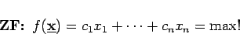
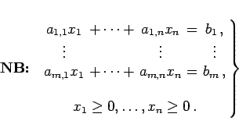
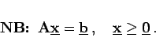
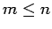

Inhalt Index DeskTop Bronstein

 Optimierung Lineare Optimierung Problemstellung und geometrische Darstellung Formen der linearen Optimierung
Optimierung Lineare Optimierung Problemstellung und geometrische Darstellung Formen der linearen Optimierung


Für die Herleitung eines Lösungsverfahrens ist es günstig, das System der Nebenbedingungen (18.1b; 18.2b) als Gleichungssystem mit vorzeichenbeschränkten Variablen zu schreiben. Dazu wird jede freie Variable xk durch die Differenz von jeweils zwei nichtnegativen Variablen xk = xk1 - xk2 ersetzt. Die Ungleichungsbedingungen werden durch Addition einer nichtnegativen Variablen, der Schlupfvariablen, in Gleichungen überführt. Damit nimmt das lineare Optimierungsproblem die folgende Form an:
Die Kurzform lautet:
|  | (18.4a) |
|  | (18.4b) |
|  | (18.5b) |
Es kann vorausgesetzt werden, daß , da anderenfalls das Gleichungssystem linear abhängige bzw. widersprüchliche Gleichungen enthält.